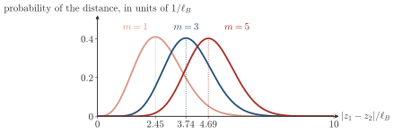
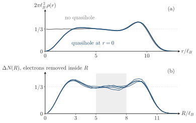

Page 10 of 13 of this session
4.16 Fractional filling and the Laughlin wavefunction
How do we fill only a fraction of the lowest Landau level and still keep the electron gas uniform? We will now see that the answer is the Laughlin wavefunction (4.12), whose filling is \(\nu=1/m\) with an odd integer \(m\). Its excitations, the quasiholes of Section 4.17, carry a charge of magnitude \(e/m\).
\[\Psi_1(z_1,\dots,z_N) = \prod_{i<j}(z_i-z_j)\; \exp\!\left(-\sum_i \frac{|z_i|^2}{4\ell_B^2}\right). \tag{4.11}\]
This is the state of the filled lowest Landau level of Section 4.14, with \(z_i=x_i+iy_i\) the position of the electron \(i\) written as a complex number. It is the Slater determinant of the orbitals \(z^0\) to \(z^{N-1}\), and its density is flat, with one electron per flux quantum.
Let us now say that we want to occupy only a fraction of the available LLL orbitals, for example one out of every three, but in a way that keeps the electron gas uniform. If we leave the orbitals empty in an irregular way, we obtain a density that is clearly not uniform and has lumps, since each empty orbital is at its own fixed radius. We look for a many-body wavefunction with three properties. First, it still lives only in the LLL, so it is built only from the coordinates \(z_i\) and never from \(\bar z_i\). Second, it is still antisymmetric, since the particles are still electrons. Third, in a heuristic sense, it keeps the electrons as far from each other as possible, since this is what a repulsive Coulomb interaction favors when we minimize its energy.
The construction that satisfies the three conditions at the same time is very simple. We take the wavefunction of the filled LLL (4.11) and we raise the Vandermonde factor to a power \(m\). This is what is called the Laughlin wavefunction.
The Laughlin wavefunction of \(N\) electrons is
\[\Psi_m(z_1,\dots,z_N) = \prod_{i<j}(z_i-z_j)^m\; \exp\!\left(-\sum_i \frac{|z_i|^2}{4\ell_B^2}\right), \tag{4.12}\]
with \(m\) an odd integer. It stays in the lowest Landau level, it is antisymmetric, and it fills the fraction \(\nu=1/m\) of the level, which is (4.13).
The exponent \(m\) must be an odd integer, since an even power would make the wavefunction symmetric and not antisymmetric under exchange, and this is not allowed for fermions. A larger exponent makes the electrons avoid each other more, since the wavefunction now vanishes to \(m\)-th order, and not only linearly, when two electrons are at the same point. This is the correlation effect that we wanted. When we compute the electron density that follows from it, we obtain the filling factor
\[\nu = \frac{1}{m}, \tag{4.13}\]
which we can also see directly by counting. The maximum power of any single coordinate in the fully expanded polynomial (4.12) is \(m(N-1)\), so the wavefunction uses the angular-momentum orbitals up to \(m(N-1)\). This means that \(N\) electrons are spread over \(\approx m(N-1)+1 \approx mN\) available LLL orbitals, which gives a filling fraction of \(N/(mN)=1/m\), in agreement with (4.13).
So we start only from the single-particle LLL orbitals, the Pauli exclusion principle and a heuristic argument about correlations. From them we arrive at an exact ground state of a repulsion of very short range. Among the states of zero energy of this repulsion it is the densest one. For the Coulomb repulsion and \(m=3\) we compare at the same total angular momentum, \(3N(N-1)\hbar/2\). There the Laughlin state is very close to the ground state but not equal to it, with an overlap of \(0.99\) for three electrons and \(0.98\) for four on a disc. This state will give us fractional charge in the next section.
The steps From the highest power of the polynomial to the filling (4.13)
Let us take two electrons first. The polynomial of (4.12) is
\[(z_1-z_2)^m=\sum_{k=0}^{m}\binom{m}{k}\,z_1^{\,k}\,(-z_2)^{m-k},\]
so each electron appears with every power from \(0\) to \(m\), and the two electrons use the orbitals \(z^0\) to \(z^m\) of (4.10). These are \(m+1\) orbitals for \(2\) electrons, which for \(m=3\) is \(2/4=1/2\) electron per orbital.
For \(N\) electrons the coordinate \(z_1\) appears in the \(N-1\) factors \((z_1-z_j)^m\) with \(j\neq1\). Its highest power is then \(m(N-1)\), and its lowest power is \(0\). The state is antisymmetric, so the same holds for every \(z_i\), and the droplet uses the orbitals \(0\) to \(m(N-1)\). The orbital \(z^M\) sits on the ring that encloses \(M\) flux quanta, as Section 4.15 says, so the droplet holds about one flux quantum per orbital. Its filling is then the number of electrons per orbital,
\[\nu_N=\frac{N}{m(N-1)+1}.\]
For \(m=3\) this is \(1/2\) for \(N=2\) and \(20/58=0.345\) for \(N=20\). This is a mean over the whole droplet, and for \(20\) electrons the density in the bulk is already \(1/3\), as the problem below says. For large \(N\) the terms \(1\) and \(-m\) are small against \(mN\), so \(\nu_N\to1/m\), which is (4.13).
The statement that a larger \(m\) keeps the electrons apart can be seen already for two electrons, in Schematic 4.11.

Why must the exponent \(m\) of the Laughlin wavefunction (4.12) be an odd integer?
\[\Psi_m(z_1,\dots,z_N) = \prod_{i<j}(z_i-z_j)^m\; \exp\!\left(-\sum_i \frac{|z_i|^2}{4\ell_B^2}\right), \tag{4.12}\]
Show the answers
- A. ✗ False
This is false. The filling factor is \(\nu=1/m\). For \(m=2\) it is \(1/2\), which is smaller than one.
- B. ✗ False
This is false. The factor \((z_i-z_j)^2\) is still a polynomial in \(z\), so the state stays in the lowest Landau level. It is a valid state for bosons at \(\nu=1/2\).
- C. ✓ True
This is true. Exchanging two electrons changes the sign of \((z_i-z_j)\), and so \((z_i-z_j)^m\) changes sign only for odd \(m\). This is the antisymmetry that fermions need.
Each polynomial below multiplies the Gaussian \(e^{-\sum_i|z_i|^2/4\ell_B^2}\) of \(N\) electrons. Which state has the filling \(\nu=1/5\)?
Show the answers
- A. ✗ False
This is false. When \(z_1\) goes once around \(z_2\), the factor \((z_1-z_2)^{1/5}\) gets the phase \(e^{2\pi i/5}\) and does not come back to itself. So it is not a wavefunction, and a smaller filling needs a higher power and not a lower one.
- B. ✗ False
This is false. The exchange of \(z_1\) and \(z_2\) gives \((z_2-z_1)^4=(z_1-z_2)^4\) with no minus sign, so this is a state of bosons. The highest power of \(z_1\) is \(4(N-1)\), so its filling goes to \(1/4\).
- C. ✓ True
This is true. The power \(5\) is odd, so the state is antisymmetric. The highest power of \(z_1\) is \(5(N-1)\), so \(N\) electrons use \(5(N-1)+1\) orbitals, and the filling goes to \(1/5\) for large \(N\).
Take \(N=3\) electrons in the Laughlin state (4.12) with \(m=3\). What is the highest power of \(z_1\) in the polynomial? How many orbitals of the lowest Landau level does the state use, and what is its filling? What happens for large \(N\)?
Solution
The coordinate \(z_1\) appears in the two factors \((z_1-z_2)^3\) and \((z_1-z_3)^3\), so its highest power is \(3+3=6\), which is \(m(N-1)\). Its lowest power is \(0\), from the term \((-z_2)^3(-z_3)^3(z_2-z_3)^3\). The state uses the orbitals \(z^0\) to \(z^6\), which are \(7\) orbitals, and the \(7\) flux quanta of the droplet hold \(3\) electrons, so the filling, the number of electrons per orbital, is \(3/7=0.43\).
For \(N\) electrons the same counting gives \(N/(3N-2)\), which goes to \(1/3\) for large \(N\). For \(20\) electrons there are \(20/58=0.345\) electrons per orbital, above \(1/3\) by a correction of order \(1/N\). This is a mean over the whole droplet. The density in the bulk is already \(1/3\), as the grey curve of Schematic 4.12 shows, and the difference comes from the edge, where the density has a bump above \(1/3\). So a calculation on a disc with a few electrons counts the orbitals as \(m(N-1)+1\) and not as \(mN\).
4.17 Quasiholes and quasielectrons
From this point to the end of Section 4.18, the material has no counterpart in session4.ipynb. The notebook of this session stops at the integer quantum Hall state, its Landau levels and its edge and Chern-insulator physics, which are Sections 4.10, 4.11 and 4.19. There is no numerical exercise on the quasiholes, the quasielectrons, the fractional charge or the anyonic statistics.
The excitations above the Laughlin ground state (4.12) also have a simple construction in these coordinates. A quasihole at the origin is obtained when we multiply the wavefunction by an extra overall factor \(z_i\) for every electron. A quasihole at an arbitrary position \(w\) is obtained instead when we insert a factor \((z_i-w)\) for each electron, which gives the following state.
A quasihole of the Laughlin state at the position \(w\) is
\[\Psi_{\text{qh}}(w) = \prod_i (z_i-w) \; \Psi_m(z_1,\dots,z_N). \tag{4.14}\]
It pushes the electrons away from \(w\) and leaves a region with \(1/m\) of an electron less. So the quasihole has the charge \(e/m\) in size, with the sign opposite to the charge of the electrons.
This extra factor raises by one the effective power of every orbital. With the relation between angular momentum and radius of Section 4.15, this moves the charge density outward, away from \(w\), and leaves a region with less charge there, which is the quasihole. When we repeat this construction \(m\) times, at \(m\) different positions, we remove in total the charge of one electron. This is consistent with each quasihole having only a fraction \(1/m\) of the electron charge. We will confirm this fraction directly with the Berry phase in Section 4.18. Schematic 4.12 shows the region with less charge for \(m=3\) and \(20\) electrons.

In the same language, a quasielectron is the inverse operation. Instead of raising the power, which we do when we multiply by \(z_i-w\), we lower it, and we do this with the derivative \(\partial/\partial z_i\) acting on the polynomial part instead of a multiplication. This moves charge inward instead of outward, and it gives an excitation with the opposite fractional charge, which has the sign of the charge of the electrons.

The charge of the quasiparticles can be read from the shot noise of a current. In a two-dimensional electron system in a high magnetic field, at the filling factor \(1/3\), the shot noise of the tunneling current gives the charge of the quasiparticles directly, and it is \(e^*=e/3\). In our reading, the noise of a current grows with the charge of each particle that carries it. So this current is carried by pieces of charge \(e/3\) and not \(e\), which is the charge \(e/m\) of a quasihole for \(m=3\). The measurement is in this article.
The Laughlin state has \(m=3\). We insert three quasiholes at three different places,
\[\Psi=\prod_i(z_i-w_1)(z_i-w_2)(z_i-w_3)\,\Psi_3 .\]
Together they remove the charge of one electron. What is the magnitude of the charge of one quasihole?
Show the answers
- A. ✗ False
This is false. If one quasihole removed the charge \(e\), three of them would remove \(3e\) and not the charge of one electron.
- B. ✗ False
This is false. Three quasiholes with \(e/9\) remove \(e/3\). This is a third of the charge of one electron and not the full charge.
- C. ✓ True
This is true. Three identical quasiholes remove the charge \(e\) together, so each one removes \(e/3\). This agrees with \(q=e/m\), which we confirm with the Berry phase in the next section.
Each picture is the density \(2\pi\ell_B^2\rho\) of \(20\) electrons against the radius \(r\). A quasihole at the origin multiplies the state by \(\prod_iz_i\). Which picture has a quasihole at the origin?
Show the answers
- A. ✗ False
This is false. The density is flat at \(1\) from the origin to the edge, with no dip. This is the filled lowest Landau level, with \(\nu=1\).
- B. ✓ True
This is true. The factor \(\prod_iz_i\) vanishes when an electron sits at the origin, so the density is zero there. Away from the dip the density is back at \(1/3\), and the dip holds about \(1/3\) of an electron less, counted in a disc of radius \(5\) to \(8\,\ell_B\).
- C. ✗ False
This is false. The density is flat at \(1/3\) down to the origin, with no dip. This is the Laughlin state with \(m=3\) and no quasihole, and the bump near \(9\,\ell_B\) is the edge of the droplet.
- In Section 4.18 a Berry phase confirms that the charge of the quasihole has the magnitude \(e/m\), and gives its anyonic statistics.
- In Section 4.20 fractional Chern states appear at zero field in twisted MoTe\(_2\).
- In Section 5.1 the fractional quantum Hall state is contrasted with a superconductor, and in Section 7.1 fractional Chern insulators are an example where mean-field theory fails.